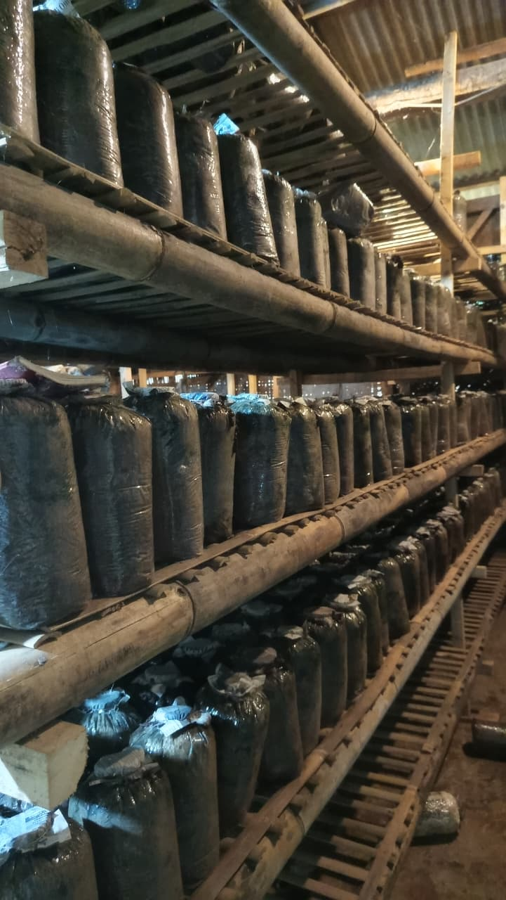
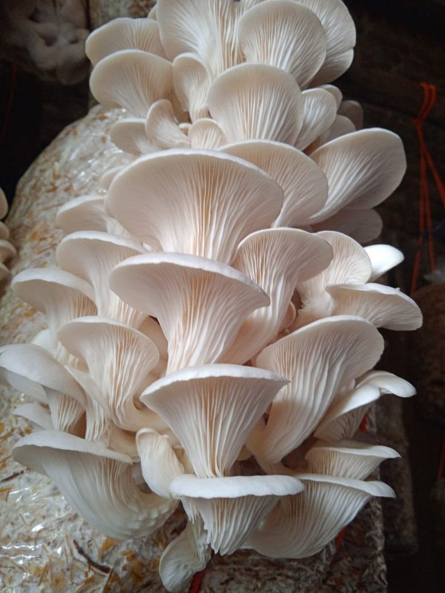
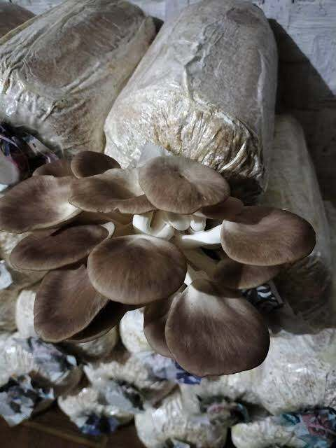
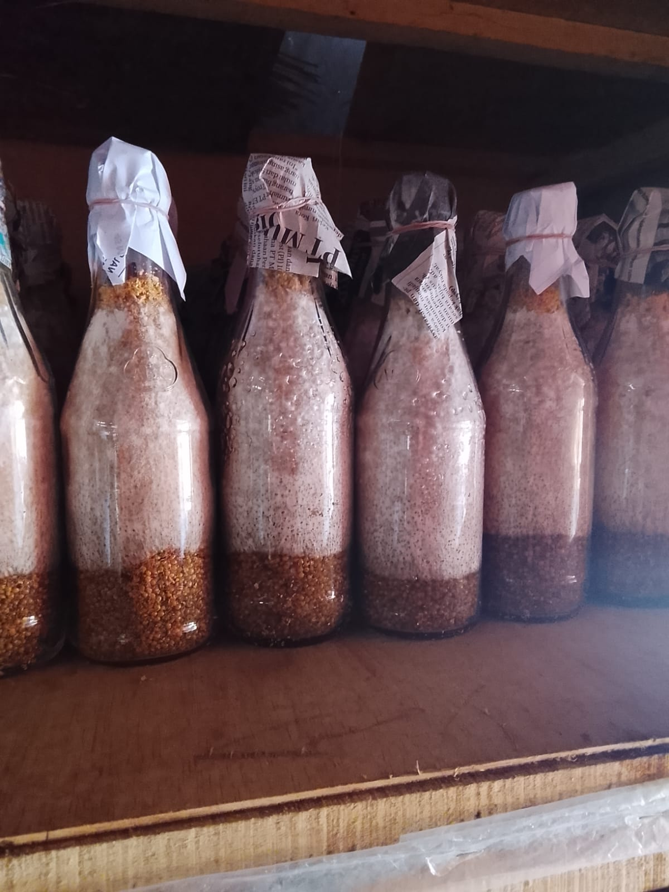

Menghadirkan jamur tiram berkualitas tinggi melalui teknologi budidaya terdepan dan komitmen mendalam terhadap keberlanjutan lingkungan.
10.000+
Baglog Aktif
7+
Mitra Petani
8 Tahun
Pengalaman
Kombinasi sempurna antara inovasi teknologi mesin dan keberlanjutan lingkungan untuk menghasilkan produk jamur terbaik.
Metode budidaya ramah lingkungan dengan teknologi modern untuk hasil optimal.
Kerjasama dengan 7+ mitra petani untuk memastikan pasokan yang stabil dan berkualitas.
Jamur tiram berkualitas tinggi dengan standar produksi yang sangat ketat.
Dari biakan murni hingga baglog siap panen, kami menyediakan seluruh rangkaian produk budidaya jamur tiram.

Jamur tiram putih (Pleurotus ostreatus) kami dipanen segar setiap hari, memiliki tekstur lembut dan rasa gurih alami.
Detail Produk chevron_right
Varian tiram cokelat memiliki aroma lebih tajam dan tekstur lebih padat. Cocok untuk kebutuhan kuliner premium.
Detail Produk chevron_right
Bibit jamur adalah bahan awal yang digunakan untuk membudidayakan jamur. Bibit ini berisi miselium jamur (benang-benang halus jamur) yang sudah ditumbuhkan pada media tertentu seperti biji jagung, sorgum, atau serbuk kayu.
Detail Produk chevron_rightDengar langsung dari pasar tetap yang telah merasakan kualitas produk HDSF Mushroom.
"Kualitas jamur dari HDSF Mushroom sangat konsisten. Jamur tiram segar berkualitas tinggi untuk dijualkan di pasar saya."
Rekan Kerja Sama
Pasar Kopo

Dapatkan jamur tiram segar dengan kualitas premium langsung dari sumbernya.